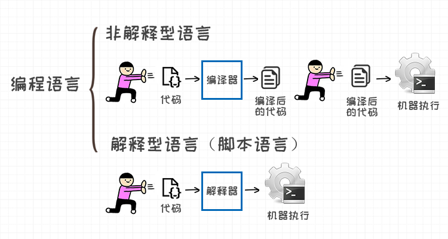
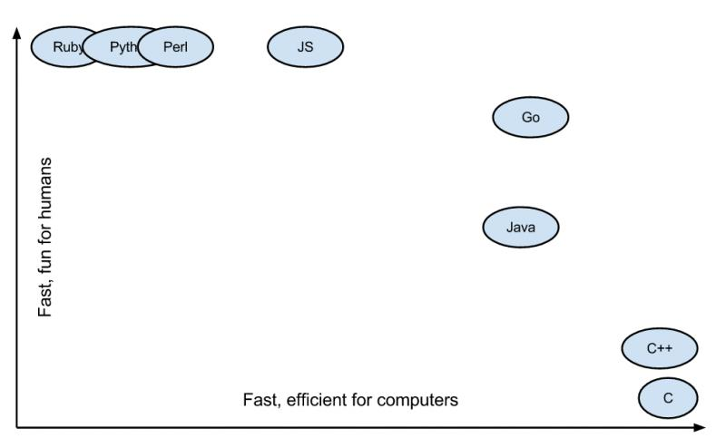

最近博客和公众号文章差不多有二个多月没有更新了，相比之前每月一篇文章的更新频率，最近确实懒散了许多，一来年底收尾之际手上的工作繁重抽不出时间，二来自己最近的空闲时间的学习计划也排的紧密，久而久之就把写博客是事情落下了
但是也得益于自己之前坚持写博客的习惯，累积了一些读者，我们知道人都是有惰性的，但每次想偷懒不写博客的时候，看到订阅栏里面读者就觉得心生愧疚，我想这也是开放分享的一个好处，就是通过的外部力量去督促你去坚持下去，经过实践，这确实是一种非常好的方式
为什么会想写这篇文章？主要有如下几个原因
今天想写下关于编程语言的本质，这个命题很大，所以只是从浅显的层次上谈一谈，从应用层面聊聊不同语言的差异，因为我未曾有时间深入学习过《编译原理》（也是大家俗称的龙书），所以并未深入到编译原理等层次上，还请见谅
先抛出我的个人观点：编程语言的本质就是规则
经历是我上两周花了周末两天的时间，学习了一门新的编程语言，并且在第三天就写了一个类似购物商城的简单程序，学完后我就在反复思考，为什么可以在熟悉一门编程语言后，再去学习其他的编程语言，可以仅仅花费几天时间就可以掌握，而我在学习第一门编程语言的时候却足足花费了半年时间才觉得自己仅仅入门？
带着这个疑问我开始思考问题，我的学习路径是这样，我入门编程语言学的是 Java，后面自学了 JavaScript，Groovy，Ruby， 自我计划后续还继续打算深入学习 C 和 GO 语言，想学习 C 和 GO 主要是有以下几个目的：

（图片来自 Medium：Why should you learn Go?）
关于语言的应用场景，这方面我们就不继续展开讨论了，回到文章的主题，浅谈编程语言的本质，经过思考后我认为，任何一门编程语言实际上是包含了两种内容
知识说是共性，是因为它面向所有编程语言通用，例如知识包含对以下内容的理解：
所以以上内容解释了，为什么入门学习编程语言这么慢？是因为你在刚刚接触第一门编程语言的时候，其实你面对的是两个知识体系的内容，既共性内容（知识）+ 特性内容（规则），例如你刚学习 Java 你除了需要去学习什么是布尔值 Boolean，整型 Integer，浮点 Float，字符串 String，这些通用的“知识”外，你还需要去学习它的规则，常见的 Java 语言规则就包含以下：
如果明白了编程语言的本质后，你会发现共性的知识只要学习一遍就可以了，当你理解知识再去学习其他语言的时候，你会发现你学习一门新的语言并不是从零开始，你熟悉的共性知识都出现在你要学习的新语言里面，万变不离其宗，因为任何编程语言都无法跳过这些基础知识，正是这是知识加速你对新语言的学习理解，所以你只需要学习新语言的规则就可以了，了解下它的逻辑控制，异常怎么玩，有什么新特性，适用于什么场景，这都为你节省了大量的时间和精力
例如 Ruby 我只需要大概了解它的 Meta Programing 怎么玩，逻辑和流程控制符的规则，Java 我只需要大概知道它的异常体系，接口，继承和封装怎么玩，泛型和相应的工具类怎么用就可以上手了
今天写这篇文章自己在学习新语言中的体会，也刚好解释了一个问题，就是为什么很多程序员可以同时掌握多门语言？他们是怎么做到的？他们为什么会那么多的精力？
其实答案就是，首先能区分和抽离 不同编程语言的基础共性（知识） + 不同编程语言的特性（规则），先把编程语言的共性练习的足够扎实，再去学习不同语言的特性规则，其实新语言学起来就容易得多，然后就是随着使用实践增加熟练程度，最后对整体架构的掌握，就可以做到熟练的切换和玩多种不同编程语言的程序
这虽然是看似很 coooool 的事情，但是背后都是付出的都是持续关注和投入时间，精力的过程，所以不要觉得很简单，也不要觉得很困难，很多事情如果喜欢，做就是了。